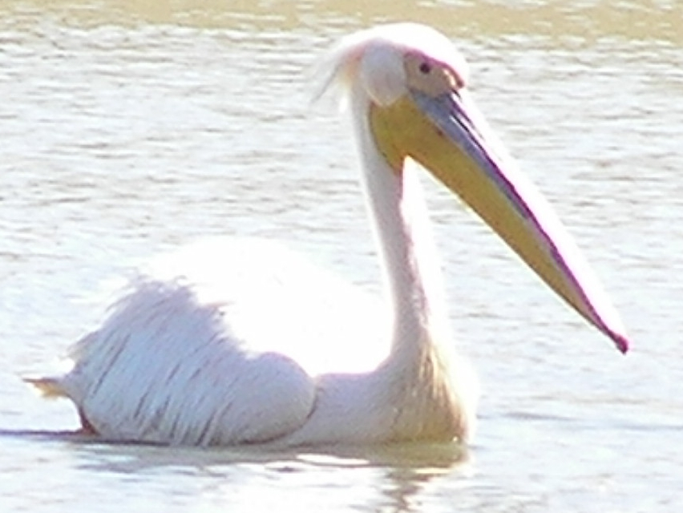
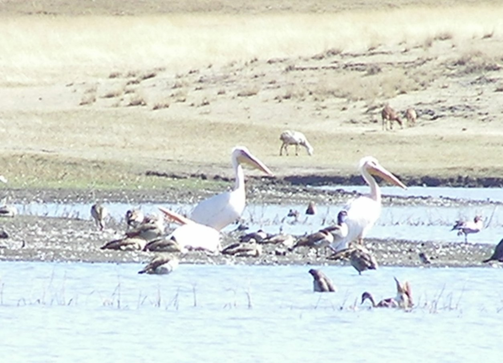

140-178cm.
 The first time we visited there were three Great_White_Pelicans on the lake in Debre Birhan. The last time we visited there were only two. This photo was taken at extreme range. Close to the Great_White_Pelicans there are blue winged goose and Egyptian goose. The photo shows other duck or goose species which I have not identified, as well as the rear end of a cormorant. I have since seen a group with two adults and five juveniles.